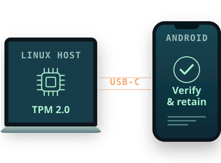
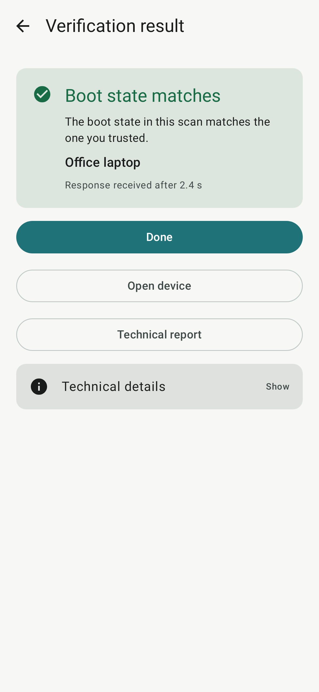
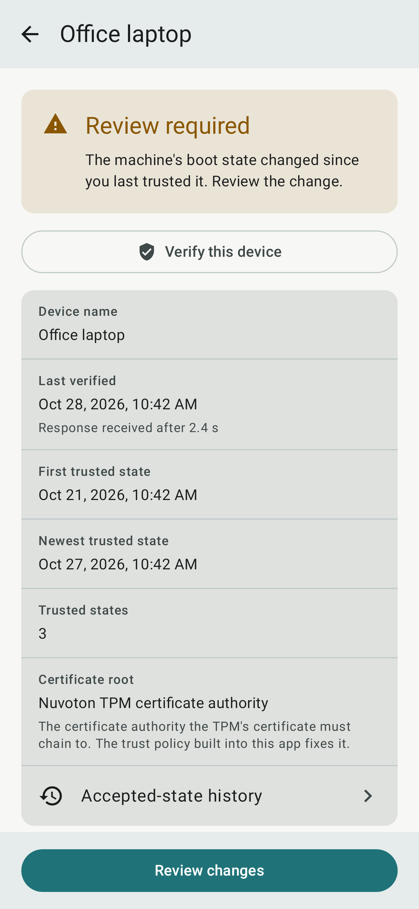

Connect
Start a session on Linux and connect your Android phone over USB-C using Android Open Accessory mode.
In development
Spot changes in your Linux boot state. Your Android phone verifies signed TPM 2.0 evidence over USB-C and compares it with states you trust.

The workflow
A firmware update can change boot measurements. AttesTux lets you review those changes on your phone before accepting the new state, and keeps the history locally.
Start a session on Linux and connect your Android phone over USB-C using Android Open Accessory mode.
The phone checks the TPM identity, key proof, fresh signed quote, and covered boot measurements.
Accept the first verified state only when you have reason to trust the computer's setup. It becomes your baseline for reviewing later changes.
Evidence, not a green light
Each scan ties a fresh challenge to a TPM quote. The phone checks the cryptographic evidence before comparing the result with the state you accepted earlier.
See the Android interfaceEndorsement certificate and attestation key checks.
Credential activation, nonce, signature, and quote coverage.
Trust policy, key identity, PCR digests, and replay coverage, with verification reports stored locally.
Android app preview
These are captures of the current Android interface using sample test data. They illustrate the app flow, not a live device scan.


Inside a report
The phone keeps a verification report with PCR results, event details, and replay coverage. This illustrative excerpt uses sample data.
The report includes an evidence hash, PCR results, and normalized event entries.
Security scope
V1 requests SHA-256 measurements for PCRs 0–15. Verification and report storage happen on the phone, without an Internet permission.
Verification checks the TPM evidence. Trusting a state is your decision: the first state you accept becomes your baseline. AttesTux cannot establish that this initial state is free of compromise, and later changes require your review before acceptance.
Compatibility
These are the hardware and software conditions for the current development builds. Public app and collector builds are not available yet.
An Android phone connected to the Linux host over USB-C, with accessory access granted to the app.
The host needs read and write access to its TPM and USB device.
The host needs a readable firmware event log for PCR replay checks.
Production builds currently trust bundled Nuvoton TPM 2.0 roots. The EK certificate must match its provisioned key.
Common questions
A verified scan and a trusted baseline answer different questions. AttesTux shows both so you can review a change before accepting it.
Start with a computer whose firmware and operating system you have set up and checked through a process you trust. The first scan has no earlier accepted state to compare against. Passing verification alone does not make it a trustworthy baseline: if you accept a compromised state, future scans will be compared against that baseline.
It means the TPM evidence passed AttesTux's checks and the covered measured state matches one you previously trusted. It does not assess every possible compromise, every PCR bank, or the TPM's complete allocation.
The phone asks you to review changes in the trust policy, endorsement key, PCR digests, or replay coverage. A verified change is not automatically added to your trusted history.
No. USB and TPM activation can be relayed. AttesTux does not handle login, biometrics, or proximity authentication.
No. Certificate checks are offline and do not use OCSP or CRLs, so AttesTux cannot determine whether a certificate has been revoked.